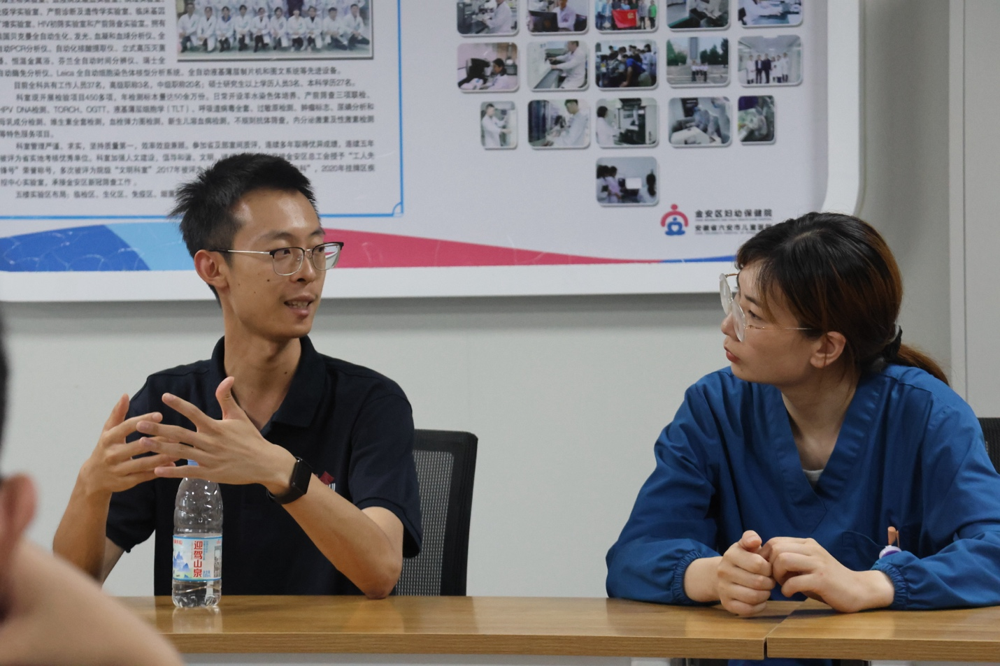

在六安市金安区妇幼保健院的座谈间里，交流氛围热烈而融洽。
同学们与妇幼保健院的胡杨医生围坐在一起，聊起了基层妇幼健康的日常诊疗，也谈到了上海的新观念与新技术的引入和落地。医生结合工作实际，分享着六安基层医疗最真实的诉求与尝试；同学们倾听着、记录着，不时提出心中的疑问。
没有宏大的推演，只有贴近临床现实的倾听与探讨。
这场面对面的沟通，让大家摸到了基层医疗的真实脉搏，也对“科技如何切切实实造福患者”有了更具体的体会。
 山海有回声博医计划 · 青年实践
山海有回声博医计划 · 青年实践影像 005
六安 · 金安区妇幼保健院

在六安市金安区妇幼保健院的座谈间里，交流氛围热烈而融洽。
同学们与妇幼保健院的胡杨医生围坐在一起，聊起了基层妇幼健康的日常诊疗，也谈到了上海的新观念与新技术的引入和落地。医生结合工作实际，分享着六安基层医疗最真实的诉求与尝试；同学们倾听着、记录着，不时提出心中的疑问。
没有宏大的推演，只有贴近临床现实的倾听与探讨。
这场面对面的沟通，让大家摸到了基层医疗的真实脉搏，也对“科技如何切切实实造福患者”有了更具体的体会。